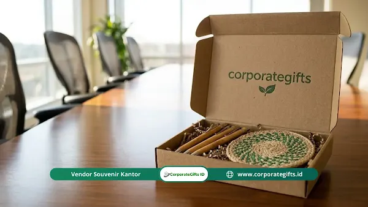

Corporate Gifts ID - Tren souvenir halalbihalal custom 2026 mengarah pada hadiah fungsional yang dipersonalisasi dengan nama penerima, memakai subtle branding, berbahan ramah lingkungan, dan dilengkapi sentuhan digital seperti kode QR. Perusahaan kini memandang souvenir halalbihalal sebagai investasi relasi bisnis strategis, bukan sekadar barang pembagian massal.
Banyak perusahaan masih menghabiskan puluhan juta rupiah dari anggaran promosi hanya untuk membeli barang generik yang akhirnya menumpuk di laci meja kerja atau terbuang sia-sia. Souvenir semacam ini jarang dipakai karena kualitasnya rendah dan memajang logo berukuran raksasa yang membuat penggunanya enggan menggunakannya di tempat umum.
Lanskap pemberian hadiah korporat (corporate gifting) telah berevolusi sejalan dengan perubahan budaya kerja masa kini. Ulasan komprehensif ini mengupas arah tren pengadaan cinderamata halalbihalal kantor, mulai dari konsep symbolic luxury, sentuhan personalisasi, kurasi gift set produktivitas, material ramah lingkungan, hingga adopsi teknologi phygital.
Poin Kunci Tren Souvenir Halalbihalal 2026:
- Symbolic Luxury & Subtle Branding: Mengganti logo raksasa dengan grafir laser halus atau emboss elegan pada material premium.
- Personalisasi Mendalam: Penyematan nama individu atau kartu ucapan apresiasi personal memicu ikatan emosional (endowment effect).
- Curated Utility Gift Set: Kurasi perlengkapan meja kerja dan mobile gadget (power bank nirkabel, tumbler vacuum, agenda kulit) yang relevan dipakai harian.
- Komitmen Keberlanjutan (Eco-ESG): Pemanfaatan material daur ulang ramah lingkungan dan kolaborasi pengrajin UMKM lokal berdaya saing.
- Integrasi Phygital Gifting: Penggabungan kemasan fisik dengan teknologi digital seperti barcode atau chip NFC interaktif berpesan video direksi.
Pergeseran Pola Pemberian Hadiah Halalbihalal Korporat 2026
Pemberian cinderamata pasca-Lebaran kini bergeser dari transaksi rutin membagikan barang menjadi strategi menciptakan pengalaman berkesan (experience-driven gifting). Pendekatan modern ini memperkuat nilai budaya korporat sekaligus meningkatkan loyalitas tim internal:
- Prioritas pada Utilitas Nyata: Pengadaan kini mengutamakan barang yang benar-benar mempermudah aktivitas harian penerima, bukan sekadar pernak-pernik pajangan.
- Instrumen Hubungan Strategis: Anggaran souvenir ditempatkan sebagai pilar perawat relasi jangka panjang dengan mitra bisnis dan klien korporat.
- Meningkatkan Retensi Karyawan: Bentuk apresiasi tulus melalui cinderamata eksklusif terbukti meningkatkan motivasi dan rasa memiliki (sense of belonging) para pekerja.
Konsep Symbolic Luxury dan Subtle Branding dalam Hadiah Kantor
Para profesional modern cenderung menghindari produk berlogo raksasa yang tampak seperti media iklan berjalan. Mereka lebih menghargai konsep symbolic luxury, yaitu barang berpenampilan mewah yang menyatu dengan gaya hidup fungsional:
- Mutu Material Mengalahkan Volume Kuantitas: Satu tumbler stainless steel 304 berdinding ganda jauh lebih dihargai daripada sepuluh botol plastik tipis murahan.
- Penerapan Subtle Branding: Logo perusahaan dicetak dengan ukuran proporsional melalui teknik grafir laser monokrom, deboss timbul pada kulit sintetis, atau tag logam kecil di sudut kemasan.
- Kebanggaan Penggunaan di Ruang Publik: Desain minimalis yang berkelas membuat penerima bangga membawa cinderamata tersebut ke ruang rapat klien maupun saat bekerja di kafe.
Personalisasi Premium: Sentuhan Emosional Pengikat Relasi
Personalisasi premium terbukti secara psikologis melipatgandakan nilai persepsi hadiah karena setiap individu merasa diakui dan dihargai kontribusinya:
- Efek Kepemilikan (Endowment Effect): Penerima menganggap sebuah produk memiliki nilai lebih berharga ketika tertera nama lengkap atau inisial mereka.
- Kartu Apresiasi Bernada Personal: Menyertakan pesan tertulis yang menyinggung pencapaian atau dedikasi tim secara spesifik, bukan sekadar template ucapan umum.
- Segmentasi Kebutuhan Tiap Divisi: Menyesuaikan isi souvenir sesuai karakter kerja, seperti perlengkapan digital untuk divisi IT atau gift set elegan untuk jajaran manajerial.

Kurasi curated gift set halalbihalal dengan sentuhan subtle branding, material eco-friendly, dan personalisasi nama.
Kurasi Gift Set Fungsional Penunjang Mobilitas Kerja Modern
Kombinasi paket hadiah (curated gift set) yang dirancang harmonis di dalam hardbox magnetik menjadi pilihan favorit untuk memperkuat silaturahmi halalbihalal:
- Perlengkapan Meja Kerja (Desk Organizer): Wireless charging pad berbahan kayu bambu, penyangga ponsel ergonomis, dan buku catatan agenda eksekutif.
- Aksesoris Teknologi Portabel: Power bank tipis berkapasitas besar, flashdisk OTG logam, atau bluetooth speaker portabel untuk kenyamanan bekerja di mana saja.
- Wellness & Daily Hydration: Termos tumbler penahan suhu panas/dingin 12 jam yang dipadukan dengan cangkir kopi keramik elegan berpenutup silikon.
Tabel Komparasi: Souvenir Konvensional vs Tren Modern 2026
Berikut perbandingan mendasar antara pola lama pengadaan souvenir kantor dengan tren mutakhir tahun 2026:
| Dimensi Evaluasi | Pendekatan Konvensional (Lama) | Pendekatan Tren Modern 2026 |
|---|---|---|
| Filosofi Pengadaan | Sekadar kewajiban rutin tahunan & pembagian merchandise massal | Investasi relasi bisnis strategis & apresiasi nyata talenta kerja |
| Estetika Branding | Logo perusahaan berukuran raksasa mencolok di tengah bodi produk | Subtle branding elegan via grafir laser monokrom atau emboss kulit |
| Nilai Guna (Utilitas) | Cinderamata pajangan atau barang plastik yang cepat rusak | Alat produktivitas harian berdaya tahan pakai 2 hingga 5 tahun |
| Komitmen Lingkungan | Material plastik sintetis sekali pakai tanpa nilai tambah lingkungan | Material ramah lingkungan (eco-friendly) & karya pengrajin lokal UMKM |
| Format Kemasan | Kantong plastik mika atau kresek belanja transparan | Smart packaging interaktif terintegrasi QR Code pesan video jajaran direksi |
Dukungan ESG: Material Ramah Lingkungan dan Produk UMKM Lokal
Perusahaan berskala nasional kini memasukkan unsur tata kelola lingkungan, sosial, dan transparansi (ESG) ke dalam setiap aspek pengadaan, termasuk souvenir kantor:
- Material Berkelanjutan (Sustainable Materials): Pemanfaatan bahan daur ulang seperti limbah serat ampas kopi, botol plastik rPET olahan, serta kayu bambu tersertifikasi.
- Pemberdayaan Pengrajin Daerah: Memadukan aksesoris modern dengan sentuhan anyaman lontar atau serat alam buatan pengrajin lokal untuk memberikan dampak sosial positif.
- Daya Tarik Employer Branding: Inisiatif hijau ini secara langsung memikat generasi talenta muda yang sangat peduli terhadap isu kelestarian lingkungan.
Inovasi Phygital Gifting: Memadukan Fisik dan Pengalaman Digital
Tren phygital gifting memadukan wujud fisik kemasan cinderamata dengan interaksi multimedia digital:
- Sematkan Quick Response (QR) Code atau Chip NFC: Diletakkan secara estetik di sudut dalam kotak kemasan atau kartu ucapan berbahan daur ulang.
- Sambutan Hangat Jajaran Pimpinan: Saat dipindai menggunakan smartphone, penerima dapat langsung menyaksikan video ucapan selamat Idul Fitri interaktif dari Board of Directors.
- Akses Voucher Digital Eksklusif: Dapat juga diarahkan ke landing page khusus berisikan e-voucher belanja atau ucapan terima kasih personal dari dewan komisaris.
Strategi Eksekusi Pengadaan Souvenir Halalbihalal Bebas Kendala
Agar pengadaan tidak terkendala lonjakan pesanan menjelang libur panjang hari raya, perhatikan panduan eksekusi berikut:
- Mulai Perencanaan 8 hingga 12 Minggu Sebelumnya: Mulai koordinasi sejak awal Ramadan untuk mengamankan slot antrean produksi dan ketersediaan stok bahan baku premium.
- Pilih Vendor Solusi Satu Atap (One-Stop Solution): Bermitralah dengan penyedia yang sanggup menangani kurasi barang, digital layout proofing, perakitan hardbox, hingga ekspedisi pengiriman ke banyak alamat kantor cabang.
- Pastikan Standardisasi Kemasan Pengiriman: Gunakan proteksi bubble wrap tebal dan pengemasan kardus berlapis agar paket hampers yang dikirim ke luar kota tiba dalam kondisi sempurna tanpa cacat.
Pertanyaan Seputar Tren Souvenir Halalbihalal Custom (FAQ)
Kesimpulan: Perkuat Silaturahmi Bisnis Lewat Cinderamata Bermakna
Momen halalbihalal perusahaan bukan sekadar agenda tahunan tanpa makna, melainkan momentum berharga untuk memperkuat hubungan kemitraan dan merekatkan kolaborasi antar-karyawan. Memilih souvenir yang mengusung tren fungsionalitas, subtle branding, dan personalisasi adalah investasi nyata yang akan dikenang sepanjang tahun.
Percayakan pengadaan cinderamata halalbihalal korporat Anda kepada Corporate Gifts ID. Kami siap membantu dari perancangan konsep, mockup gratis, hingga produksi massal bergaransi resmi untuk memastikan momen silaturahmi perusahaan Anda berlangsung sukses dan berkesan.